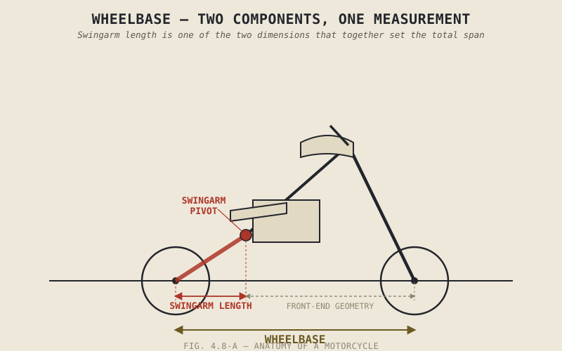

Stretch the distance between a motorcycle's front and rear axles and the bike becomes noticeably harder to unsettle at speed and noticeably more reluctant to change direction — the same single dimension buying stability with one hand and taking away agility with the other, in the same predictable trade this book has now shown up in bore and stroke, engine layout, and trail alike. This chapter covers wheelbase, and the swingarm whose length is one of the two things actually determining it.
Chapter 4.7 covered how far a motorcycle can lean once it's turning. This chapter steps back to a more basic dimensional question: how long the whole machine is between its wheels, and what that length costs and buys.
Wheelbase: Stability Traded Directly for Agility
Wheelbase is simply the distance between the front and rear axle centres, and it behaves exactly the way you'd expect from every other dimensional trade-off this book has covered. A longer wheelbase resists being unsettled, holds a straight line confidently, and manages weight transfer under acceleration and braking more gradually, which is precisely why touring and cruiser motorcycles, built around relaxed, stable highway manners, tend to run long. A shorter wheelbase does the opposite: it's quicker to turn in, more responsive to a given steering input, and more eager to change direction — the agility a sport-oriented motorcycle is built around — at the cost of being more easily unsettled and more prone to abrupt weight transfer, including a shorter bike's greater tendency to wheelie under hard acceleration or headshake under sudden disturbance, simply because the same forces are acting over a shorter physical distance.
The Swingarm's Second Job: Setting Half the Wheelbase
The swingarm is the pivoting arm connecting the rear wheel to the frame at the swingarm pivot, carrying the rear wheel, final drive, and rear suspension linkage as it moves. Its length is one of the two dimensions — alongside the front end's contribution — that together set the overall wheelbase, so a longer swingarm, all else equal, produces a longer wheelbase with the stability and agility trade-offs the previous section described.
The swingarm carries two further responsibilities worth flagging here, even though their full treatment belongs to Part V. First, its length and pivot angle relative to the final drive interact with how much the rear suspension resists compressing under acceleration, an effect called anti-squat that Part V will explain properly once suspension mechanics are on the table. Second, the swingarm itself is unsprung mass — weight the suspension has to move directly rather than isolating from the road the way it isolates the rest of the motorcycle — and a lighter swingarm design lets that suspension respond to bumps more effectively, a topic Part V will also return to in full.
Wheelbase isn't just a stability dial. It's the sum of two separate structural choices — front-end geometry and swingarm length — each of which is also quietly setting up how well the suspension can do its own job later.

A motorcycle shown with wheelbase measured between front and rear axles, with the swingarm's length and pivot point labeled as one of the two components determining that overall measurement.
Single-Sided Swingarms, Briefly
Some motorcycles use a single-sided swingarm, supporting the rear wheel from one side only rather than two arms straddling it. This allows notably easier rear wheel removal and gives the bike a distinctive visual look many manufacturers use deliberately, but achieving equivalent stiffness to a well-designed double-sided arm generally requires more material and weight on the single-sided side, a real cost traded against the convenience and styling benefit — another instance of this book's recurring pattern rather than a straightforward upgrade.
A Common Misconception, Cleared Up Early
It's tempting to read a wheelbase figure the way Chapter 4.3 warned against reading rake alone: as though the single number settled how a motorcycle would handle. Two motorcycles can share an identical wheelbase while distributing that length completely differently — more of it in the swingarm versus more of it in front-end geometry, with the engine and rider's mass positioned differently within that same overall span — and end up handling in noticeably different ways as a result. Wheelbase interacts directly with weight distribution and the rake and trail Chapter 4.4 already covered, exactly the kind of coupling Chapter 1.3 insisted this book keep returning to: no single chassis dimension, wheelbase included, can be read in isolation from the others.
Where This Leads
This chapter covered wheelbase and swingarm length as dimensional choices. What remains is a question about the frame's actual stiffness — not just whether it's strong enough to survive, which Chapter 4.2 already covered, but whether a certain amount of controlled flex is actually desirable rather than simply minimized. Chapter 4.9 takes up that question directly.
Key Concepts to Remember
- Longer wheelbase trades agility for straight-line stability and gentler weight transfer; shorter wheelbase trades some of that stability for quicker, more responsive handling.
- The swingarm's length is one of two dimensions, alongside front-end geometry, that together determine overall wheelbase.
- Swingarm design also affects anti-squat behaviour under acceleration and contributes directly to unsprung mass, both topics Part V will cover in full once suspension mechanics are established.
- Single-sided swingarms offer easier wheel removal and a distinctive look, at the cost of added material and weight needed to match a double-sided arm's stiffness.
- Wheelbase cannot be read in isolation — two motorcycles with identical wheelbase can handle very differently depending on how that length is distributed and where mass sits within it.
Cross-References
| ← Ch. 2.8 / 2.11 / 4.4 | All established trade-offs with no universally correct answer; this chapter applies that same pattern directly to wheelbase. |
| ← Ch. 4.3 | Warned against reading rake alone as the whole steering story; this chapter applies the identical caution to reading wheelbase alone as the whole handling story. |
| ← Ch. 1.3 | Established that no chassis dimension can be understood in isolation from the others; this chapter shows wheelbase's dependence on weight distribution and rake and trail together. |
| → Ch. 4.9 | Covers chassis flex and rigidity, returning to the structural questions Chapter 4.2 first raised about frame material and design. |
| → Pt. V | Suspension will cover anti-squat and unsprung mass in full, building directly on the swingarm concepts introduced here. (Not yet published.) |